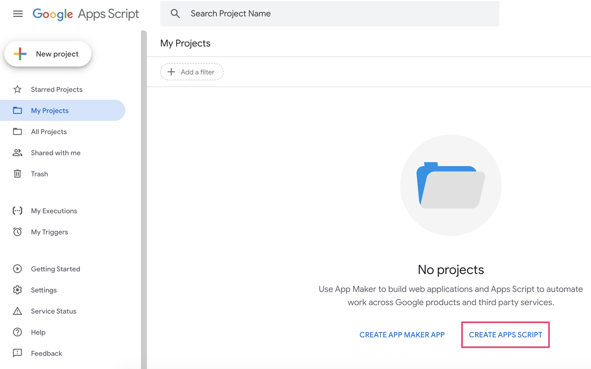
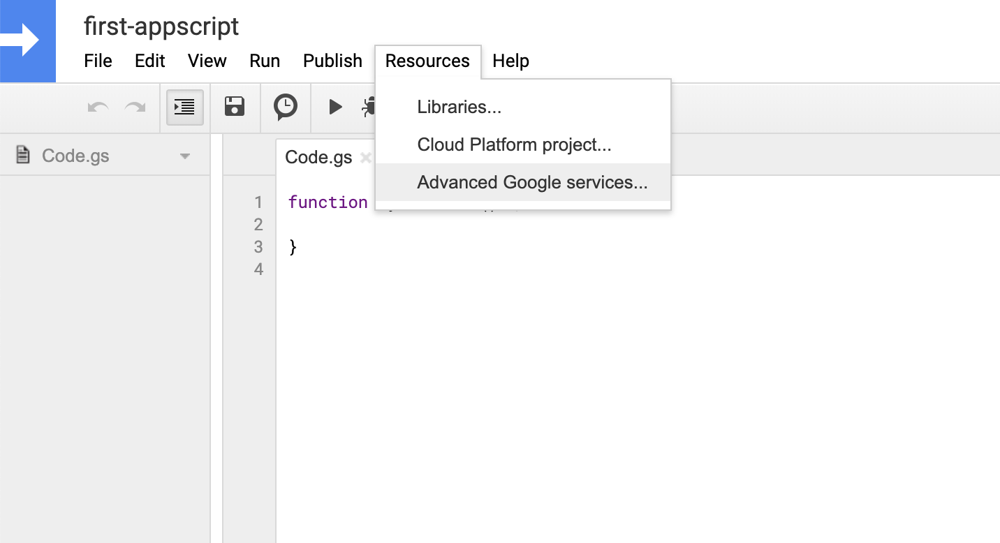
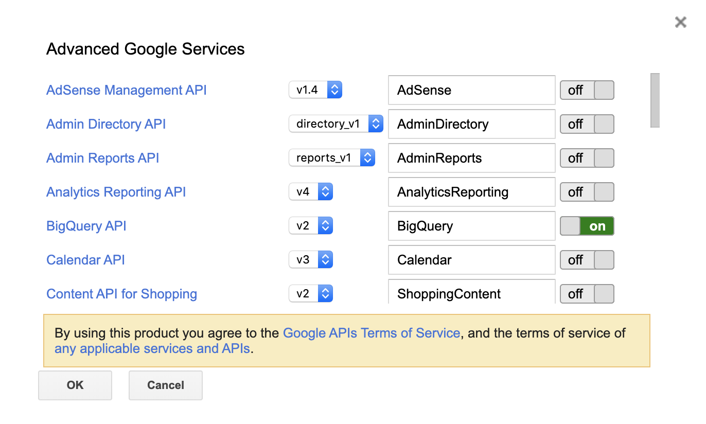
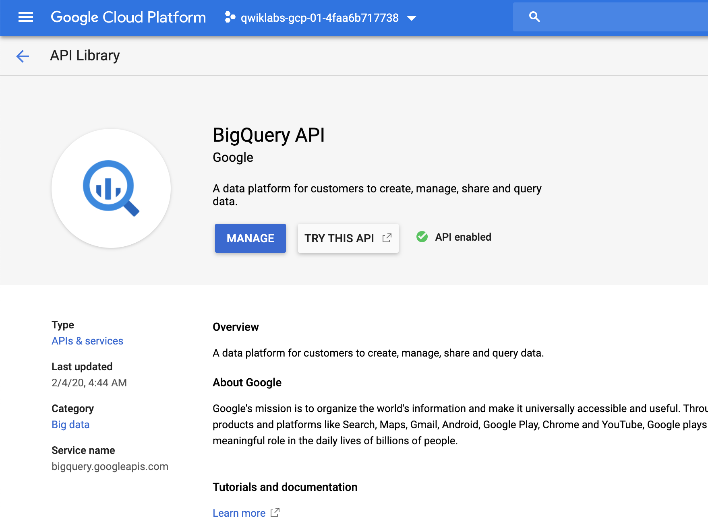
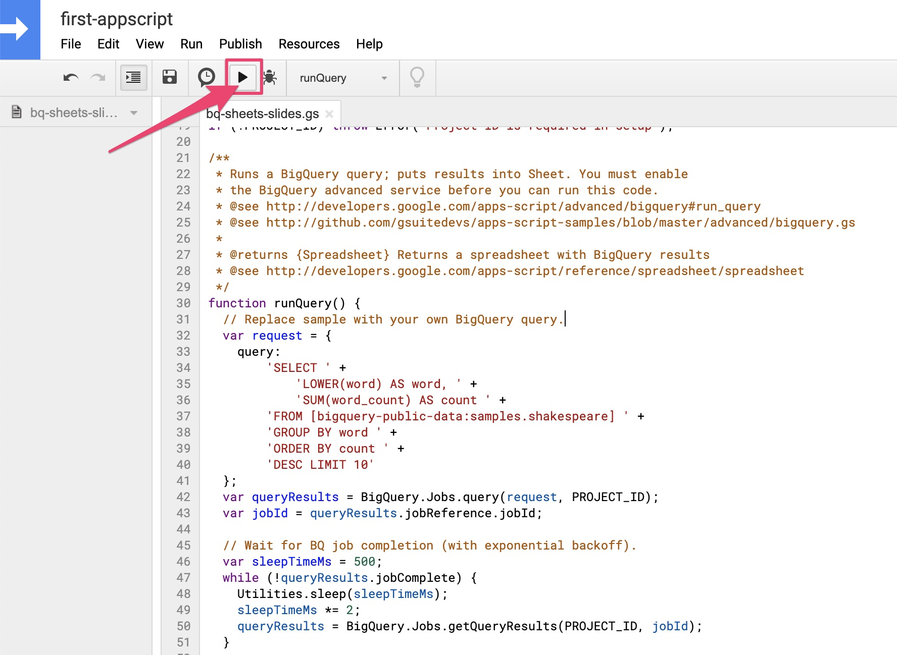
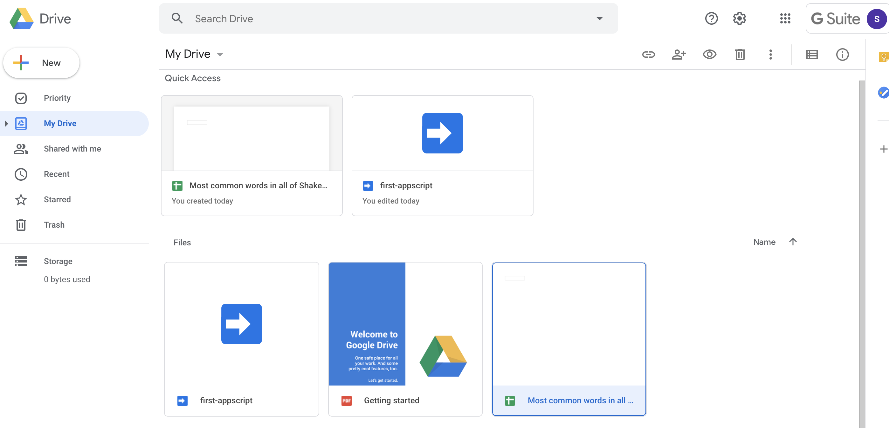
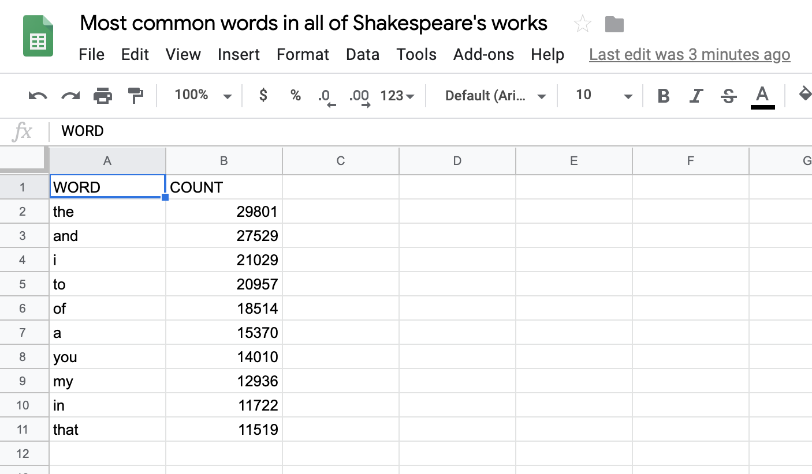
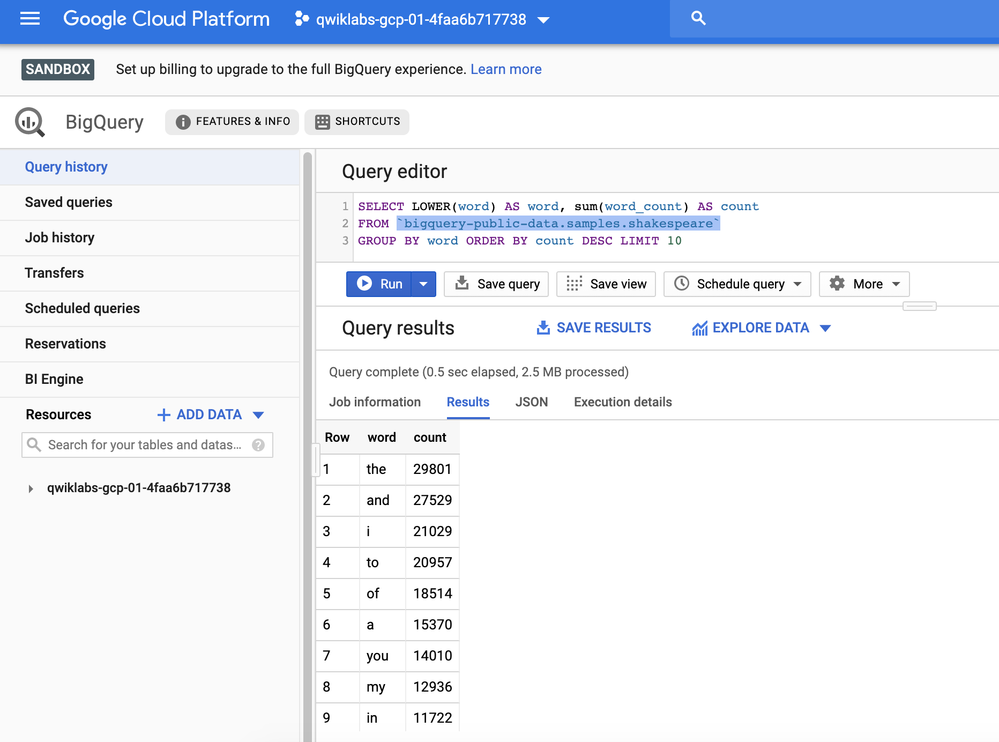
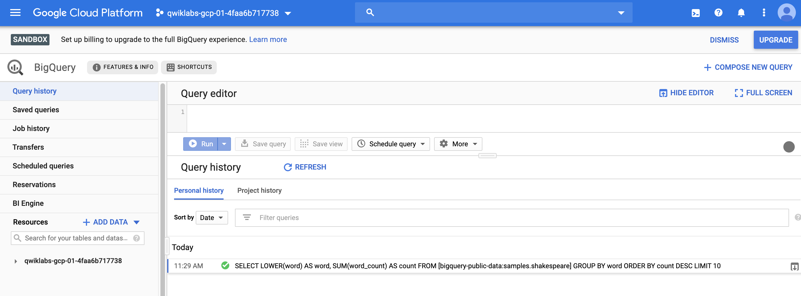
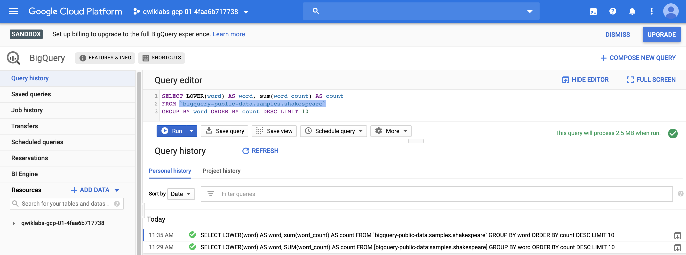

[GCP]Google Apps Scripts 串接 GCP BigQuery
Google Apps Scripts 串接 GCP BigQuery
Google Apps Scripts
Apps Script是Google開發的腳本平台，用於在G Suite平台中進行輕量級應用程序開發。可以簡單的後端功能也就能輕鬆實現了，這篇將會介紹如何使用 Google Apps Script，實現串接Cloud BigQuery
"Apps Script is a serverless JavaScript runtime for G suite automation, extension, and integration."
It is server-side JavaScript, similar to Node.js, but focuses on tight integration with G Suite and other Google services rather than fast asynchronous event-driven application hosting. It also features a development environment that may be completely different from what you’re used to. With Apps Script, you:
- Develop in a browser-based code editor but can choose to develop locally if using clasp, the command-line deployment tool for Apps Script
- Code in a specialized version of JavaScript customized to access G Suite, and other Google or external services (via the Apps Script URLfetch or Jdbc services)
- Avoid writing authorization code because Apps Script handles it for you
- Do not have to host your app—it lives and runs on Google servers in the cloud
▌實作步驟
- 登入Google Apps Scripts，建立一個新的App scripts
- 啟用 GCP BigQuery API
- 編寫script：BigQuery code
- 驗證內容 Apps Scripts
1. 登入Google Apps Scripts，建立一個新的App scripts
開啟一開新專案

建立一個為為first-appscript project

2. 啟用 GCP BigQuery API
啟用API設定有二個地方，第一是GCP API & Service
第二是App Script中的 Advanced Google service
設定 App Script “Advanced Google service”

BigQuery API →
on
GCP API & Service →
API enabled
3. 編寫Script：BigQuery code
這個是Google提供的範本，我們僅需要修改二個部份
- GCP Project ID：
var PROJECT_ID = '<YOUR_PROJECT_ID>' - 實際跑BigQuery code：
function runQuery()
1 | /** |
2 | * Copyright 2018 Google LLC |
3 | * |
4 | * Licensed under the Apache License, Version 2.0 (the "License"); |
5 | * you may not use this file except in compliance with the License. |
6 | * You may obtain a copy of the License at apache.org/licenses/LICENSE-2.0. |
7 | * |
8 | * Unless required by applicable law or agreed to in writing, software |
9 | * distributed under the License is distributed on an "AS IS" BASIS, |
10 | * WITHOUT WARRANTIES OR CONDITIONS OF ANY KIND, either express or implied. |
11 | * See the License for the specific language governing permissions and |
12 | * limitations under the License. |
13 | */ |
14 | |
15 | // Filename for data results |
16 | var QUERY_NAME = "Most common words in all of Shakespeare's works"; |
17 | // Replace this value with your Google Cloud API project ID |
18 | var PROJECT_ID = '<YOUR_PROJECT_ID>'; |
19 | if (!PROJECT_ID) throw Error('Project ID is required in setup'); |
20 | |
21 | /** |
22 | * Runs a BigQuery query; puts results into Sheet. You must enable |
23 | * the BigQuery advanced service before you can run this code. |
24 | * @see http://developers.google.com/apps-script/advanced/bigquery#run_query |
25 | * @see http://github.com/gsuitedevs/apps-script-samples/blob/master/advanced/bigquery.gs |
26 | * |
27 | * @returns {Spreadsheet} Returns a spreadsheet with BigQuery results |
28 | * @see http://developers.google.com/apps-script/reference/spreadsheet/spreadsheet |
29 | */ |
30 | function runQuery() { |
31 | // Replace sample with your own BigQuery query. |
32 | var request = { |
33 | query: |
34 | 'SELECT ' + |
35 | 'LOWER(word) AS word, ' + |
36 | 'SUM(word_count) AS count ' + |
37 | 'FROM [bigquery-public-data:samples.shakespeare] ' + |
38 | 'GROUP BY word ' + |
39 | 'ORDER BY count ' + |
40 | 'DESC LIMIT 10' |
41 | }; |
42 | var queryResults = BigQuery.Jobs.query(request, PROJECT_ID); |
43 | var jobId = queryResults.jobReference.jobId; |
44 | |
45 | // Wait for BQ job completion (with exponential backoff). |
46 | var sleepTimeMs = 500; |
47 | while (!queryResults.jobComplete) { |
48 | Utilities.sleep(sleepTimeMs); |
49 | sleepTimeMs *= 2; |
50 | queryResults = BigQuery.Jobs.getQueryResults(PROJECT_ID, jobId); |
51 | } |
52 | |
53 | // Get all results from BigQuery. |
54 | var rows = queryResults.rows; |
55 | while (queryResults.pageToken) { |
56 | queryResults = BigQuery.Jobs.getQueryResults(PROJECT_ID, jobId, { |
57 | pageToken: queryResults.pageToken |
58 | }); |
59 | rows = rows.concat(queryResults.rows); |
60 | } |
61 | |
62 | // Return null if no data returned. |
63 | if (!rows) { |
64 | return Logger.log('No rows returned.'); |
65 | } |
66 | |
67 | // Create the new results spreadsheet. |
68 | var spreadsheet = SpreadsheetApp.create(QUERY_NAME); |
69 | var sheet = spreadsheet.getActiveSheet(); |
70 | |
71 | // Add headers to Sheet. |
72 | var headers = queryResults.schema.fields.map(function(field) { |
73 | return field.name.toUpperCase(); |
74 | }); |
75 | sheet.appendRow(headers); |
76 | |
77 | // Append the results. |
78 | var data = new Array(rows.length); |
79 | for (var i = 0; i < rows.length; i++) { |
80 | var cols = rows[i].f; |
81 | data[i] = new Array(cols.length); |
82 | for (var j = 0; j < cols.length; j++) { |
83 | data[i][j] = cols[j].v; |
84 | } |
85 | } |
86 | |
87 | // Start storing data in row 2, col 1 |
88 | var START_ROW = 2; // skip header row |
89 | var START_COL = 1; |
90 | sheet.getRange(START_ROW, START_COL, rows.length, headers.length).setValues(data); |
91 | |
92 | Logger.log('Results spreadsheet created: %s', spreadsheet.getUrl()); |
93 | } |
94 | |
95 | - 貼上script，編輯BigQuery query code |
96 | - 命名為[`bq-sheets-slides.gs`](http://bq-sheets-slides.gs/) |
97 | |
98 |  |
99 | |
100 | - 主要BigQuery query cod內容 |
101 | |
102 | 往public-data拿資料samples.shakespeare(莎士比亞作品) |
103 | 擷取作品中出现频率最高的10個單字，並依歡迎程度降冪排序 |
104 | |
105 | SELECT |
106 | LOWER(word) AS word, |
107 | SUM(word_count) AS count |
108 | FROM [bigquery-public-data:samples.shakespeare] |
109 | GROUP BY word |
110 | ORDER BY count |
111 | DESC LIMIT 10 |
4. 驗證內容 Apps Scripts
- 第一次 run
- review permissions 系統會再驗證一次user/pwd
- 執行完會產出Google sheet

Google Drive
去看看產出名為
Most common words in all of Shakespeare's works的sheet
檢視一下檔案內容，看到計算出的結果

驗證從原本的bq 也有一樣的結果
- 同樣的Query，直接在BigQuery執行

Query history
從query history可以看到剛剛的執行結果

第二次直接使用BigQuery的執行結果也出現在history中

Reference:
[1] https://www.qwiklabs.com/focuses/3565?parent=catalog
[2] https://script.google.com/u/0/home